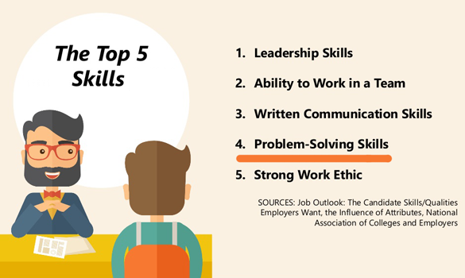

Занятия математикой тренируют память, учат логически мыслить и развивают творческие способности. Эти навыки нужны не только человеку, который решил связать свою жизнь с математикой, но всем остальным, потому что математика повышает качество жизни и открывает перед человеком новые возможности.
Изучая математику и решая задачи, Вы учитесь:
Как регулярные спортивные тренировки «прокачивают» тело, делают его здоровым, сильным и выносливым, так регулярные занятия математикой «прокачивают» мозг – развивают интеллект и познавательные способности, расширяют кругозор.
Если 10-15 лет назад перспективным считалось изучение иностранных языков, то сейчас свободным владением несколькими языками никого не удивишь. Теперь профессиональная востребованность во многом зависит от понимания технологий, умения мыслить, абстрагироваться и способностей к решению нестандартных задач. Крайне сложно обойтись без знания математики тем, кто хочет работать в сфере IT.
Абстрактное, критическое и стратегическое мышление, аналитические способности, умение выстраивать алгоритмы – «мастхэв» для хорошего разработчика.
